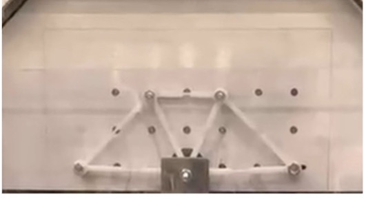
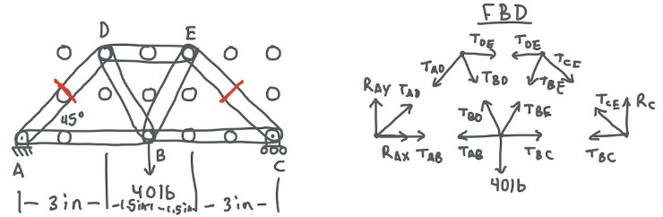

Truss Structure
Designing and fabricating a lightweight truss structure to withstand a 40-pound load.
Overview
In a team of three, we designed and laser-cut an acrylic truss targeting failure near a 40-pound center load. I developed candidate geometries and calculated member forces and predicted strength-to-weight performance for my concepts.
We used destructive testing to adjust member thickness. The final truss failed at the predicted member location but below the target load, exposing a gap between the analytical model and fabricated structure.

Design
Each team member developed three concepts. We compared the strongest candidates using predicted strength-to-weight performance and selected a geometry for fabrication.
We modeled the assembly in SolidWorks and used the member-force calculations to select dimensions and estimate weight.
Analysis & Validation
We used static equilibrium to calculate member forces under the 40-pound center load. The outer diagonal members carried approximately 28.3 lb in compression. We compared these loads with the assumed acrylic properties to size the members and predict the failure location.


Fabrication & Iteration
We generated DXF files from CAD, prepared them in CorelDRAW, laser-cut the acrylic members, and assembled them with screws and bolts.
The 1/16-inch prototype failed near 20 lb. Increasing thickness to 5/32 inch supported more than 50 lb without failure; reducing it to 3/32 inch produced a prototype failure near 42 lb. The final test specimen used 3/32-inch members but failed at 32 lb.
Results
The final truss failed at the predicted member location at 32 lb, below the 40-pound target. The report identified a change in laser cutter as a possible contributor to the difference from the 42-pound prototype result. Measuring cut dimensions and testing additional specimens would help separate fabrication variation from modeling error.